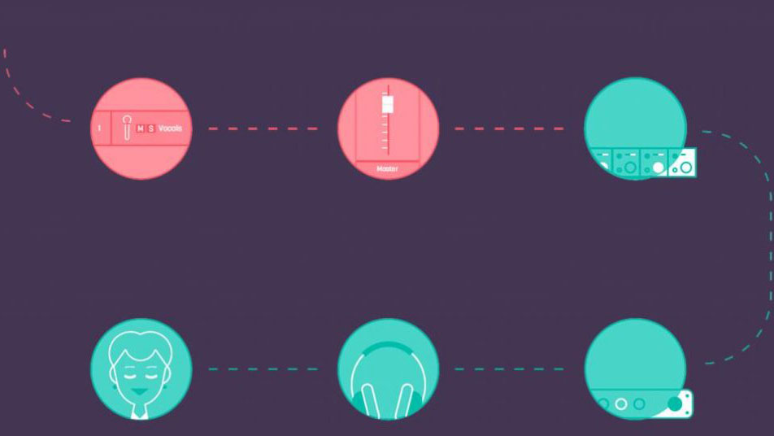

Прохождение звукового сигнала: базовые принципы
Филипп Николс, участвующий в разработке программных продуктов iZotope, в блоге компании опубликовал заметку о базовых принципах прохождении аудиосигнала внутри любой DAW. В своей публикации Николс рассказал и показал через диаграммы, как движется звук через компоненты программного обеспечения при записи и сведении музыки, в каком порядке сигнал попадает на входы и выходы, а также о том, где на пути сигнала появляются эффекты, шины и посылы.
Мы приводим адаптированный перевод заметки, дополненный переведенными диаграммами Николса. Скачать диаграммы можно в конце материала.
Прохождение звукового сигнала: базовые принципы. Содержание:
- Прохождение звукового сигнала в DAW во время звукозаписи
- Введение плагинов в путь прохождения сигнала
- В чем разница между Bus и Send, или Шины и посылы
- Прохождение звукового сигнала в DAW во время сведения
- Заключение
Одним из секретов эффективной студийной работы является знание того, какой путь проходит аудиосигнал в DAW во время записи и сведения музыки. На первый взгляд, путь прохождения аудиосигнала — простая и понятная вещь, но в условиях большого количества программ и оборудования слишком легко запутаться в том, как движется аудиосигнал, куда и в какой последовательности он попадает. Путаница и непонимание движения аудиопотока обязательно приводит к контрпродуктивным действиям, неправильной или неполной настройке маршрутизации и даже к появлению нежелательного фидбэка.
Правильно определить путь прохождения аудиосигнала легко, если мы видим кабели, которые соединяют различные компоненты студии. Но что делать, когда речь идет о работе в DAW, где все провода заменены на виртуальные соединения, невидимые человеческому глазу?
Несмотря на то, что есть множество вариантов движения аудиопотока, все они не имеют смысла, если вы не понимаете основ.
Прохождение звукового сигнала в DAW во время звукозаписи
В своей студийной работе я часто сталкивался с такой ситуацией: люди думают, что если они слышат аудиосигнал с какого-либо устройства, то без проблем запишут его. Нажатие кнопки REC активирует запись звука, но сигнал не записывается. На поверхности сразу же видна очевидная причина проблемы — звук не доходит до записывающего устройства, но если задуматься, то суть проблемы в другом — в незнании того, как движется звуковой сигнал через имеющееся оборудование.
Давайте проанализируем простейшую запись вокала с помощью только самого необходимого — микрофона, аудиоинтерфейса, компьютера и наушников. Путь прохождения аудиосигнала во время записи звука будет выглядеть следующим образом:
Иллюстрация показывает, как движется звук во время записи музыки. При этом нужно запомнить два важнейших факта:
- Звуковой сигнал сначала попадает на микрофонный предусилитель, а только затем отправляется на аналого-цифровой конвертер. По этой причине выставлять уровень громкости при записи нужно через настройку микрофонного предусилителя. Если в сигнале появляются искажения из-за перегрузки А/Ц-конвертера, устранить их с помощью фэйдера дорожки не получится — сигнал все равно останется некорректным;
- Сигнал сначала сохраняется на жесткий диск компьютера в виде аудиофайла, а только затем отправляется на фэйдер дорожки. Благодаря этому, положение фэйдера не влияет на громкость и уровень записываемого сигнала.